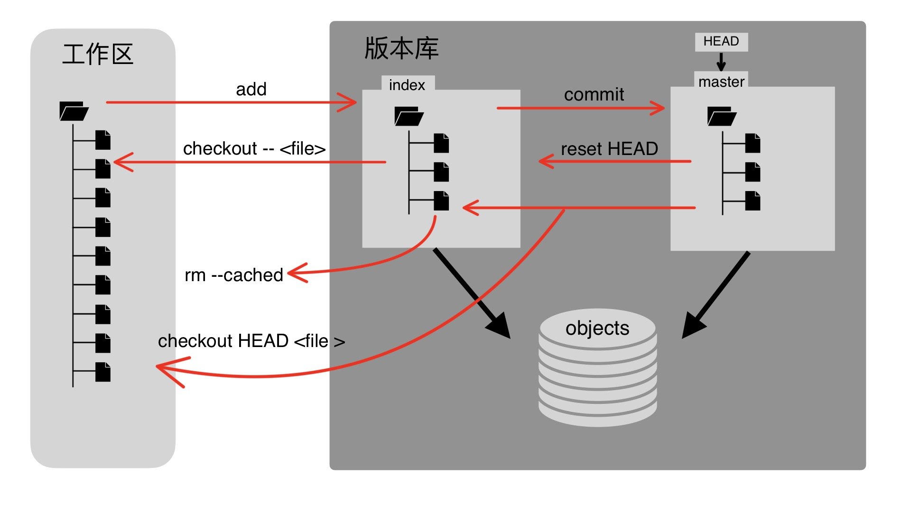
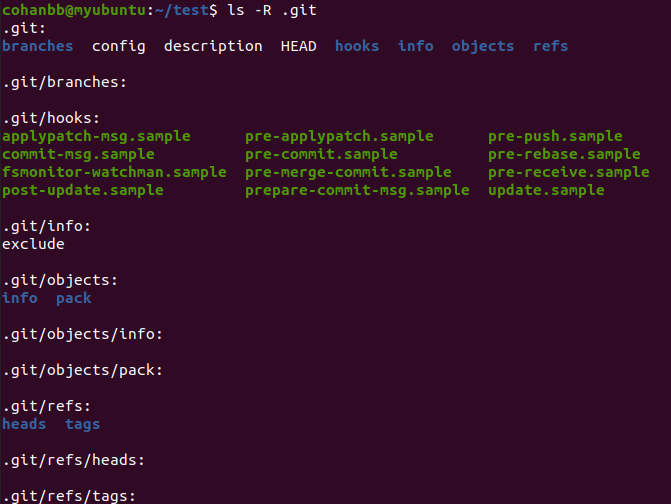
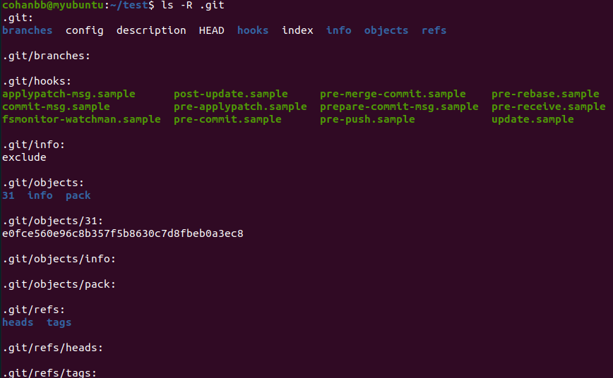
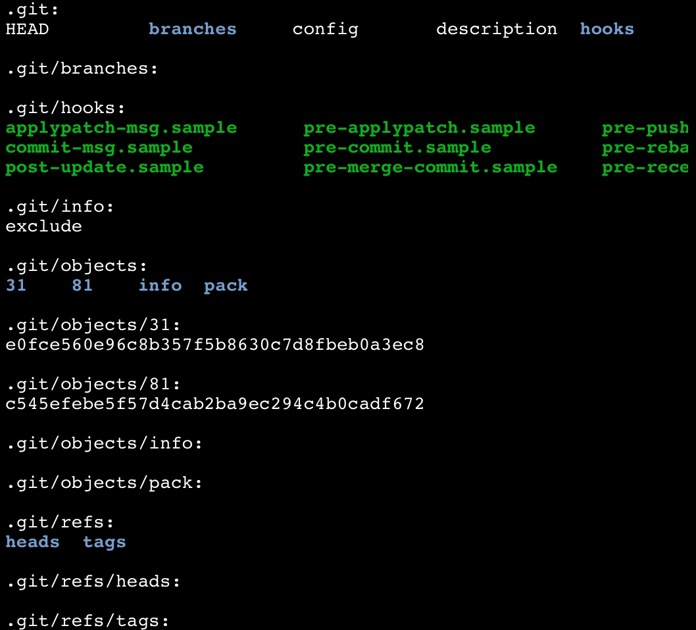
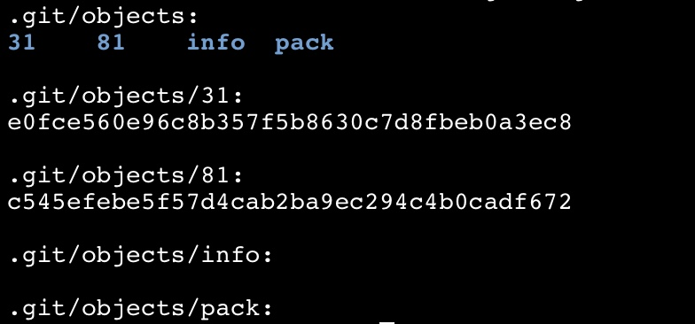
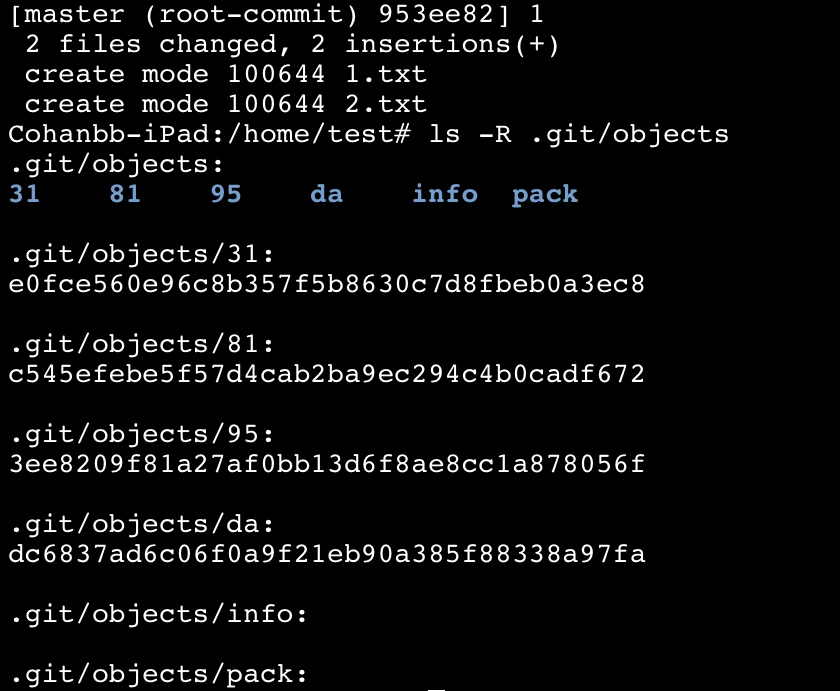
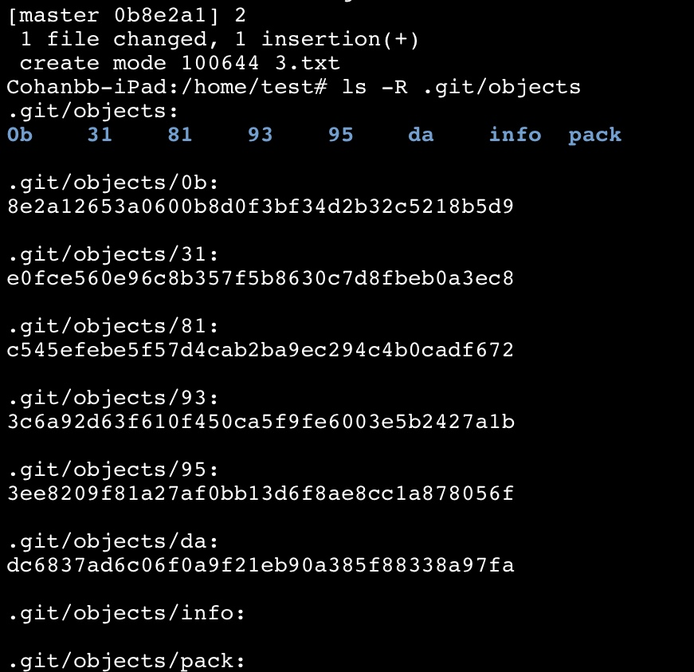

<!DOCTYPE html>
<html lang="zh-CN">
<head>
  <meta charset="UTF-8">
<meta name="viewport" content="width=device-width, initial-scale=1, maximum-scale=2">
<meta name="theme-color" content="#222">
<meta name="generator" content="Hexo 5.4.1">
  <link rel="apple-touch-icon" sizes="180x180" href="/images/apple-touch-icon-next.png">
  <link rel="icon" type="image/png" sizes="32x32" href="/images/favicon-32x32-next.png">
  <link rel="icon" type="image/png" sizes="16x16" href="/images/favicon-16x16-next.png">
  <link rel="mask-icon" href="/images/logo.svg" color="#222">
  <meta name="google-site-verification" content="zyhJFoyXt3Lg0LGPDZqhXcYYt2f0p3yDZqt8noeZ_-Q">

<link rel="stylesheet" href="/css/main.css">


<link rel="stylesheet" href="/lib/font-awesome/css/all.min.css">

<script id="hexo-configurations">
    var NexT = window.NexT || {};
    var CONFIG = {"hostname":"cohanbb.github.io","root":"/","scheme":"Muse","version":"7.8.0","exturl":false,"sidebar":{"position":"left","display":"always","padding":18,"offset":12,"onmobile":true},"copycode":{"enable":true,"show_result":false,"style":null},"back2top":{"enable":true,"sidebar":false,"scrollpercent":false},"bookmark":{"enable":false,"color":"#222","save":"auto"},"fancybox":false,"mediumzoom":false,"lazyload":false,"pangu":false,"comments":{"style":"tabs","active":null,"storage":true,"lazyload":false,"nav":null},"algolia":{"hits":{"per_page":10},"labels":{"input_placeholder":"Search for Posts","hits_empty":"We didn't find any results for the search: ${query}","hits_stats":"${hits} results found in ${time} ms"}},"localsearch":{"enable":true,"trigger":"auto","top_n_per_article":1,"unescape":false,"preload":false},"motion":{"enable":true,"async":false,"transition":{"post_block":"fadeIn","post_header":"slideDownIn","post_body":"slideDownIn","coll_header":"slideLeftIn","sidebar":"slideUpIn"}},"path":"./search.xml"};
  </script>

  <meta name="description" content="摘要 Git 是一个开源的分布式版本控制系统，是 Linus Torvalds 为 Linux 内核开发的开放源码的版本控制软件。与其他版本控制工具不同，Git 采用了分布式版本库的方式，同时还是一个内容管理系统，为不同设备和用户间的内容同步提供了便利。Git 目前被广泛运用在 GitHub、GitLab 以及中国的 Gitee 等代码托管和版本控制系统。">
<meta property="og:type" content="article">
<meta property="og:title" content="Git 教程及其远程仓库 GitHub">
<meta property="og:url" content="https://cohanbb.github.io/2022/06/09/Git-%E6%95%99%E7%A8%8B/index.html">
<meta property="og:site_name" content="Cohanbb Studio">
<meta property="og:description" content="摘要 Git 是一个开源的分布式版本控制系统，是 Linus Torvalds 为 Linux 内核开发的开放源码的版本控制软件。与其他版本控制工具不同，Git 采用了分布式版本库的方式，同时还是一个内容管理系统，为不同设备和用户间的内容同步提供了便利。Git 目前被广泛运用在 GitHub、GitLab 以及中国的 Gitee 等代码托管和版本控制系统。">
<meta property="og:locale" content="zh_CN">
<meta property="og:image" content="https://cohanbb.github.io/2022/06/09/Git-%E6%95%99%E7%A8%8B/ACA7C7AA-A862-4052-A3D8-CCF726A39110.jpeg">
<meta property="og:image" content="https://cohanbb.github.io/2022/06/09/Git-%E6%95%99%E7%A8%8B/2022-05-30-22-48-10.png">
<meta property="og:image" content="https://cohanbb.github.io/2022/06/09/Git-%E6%95%99%E7%A8%8B/2022-05-30-23-08-01.png">
<meta property="og:image" content="https://cohanbb.github.io/2022/06/09/Git-%E6%95%99%E7%A8%8B/16540518361014.jpg">
<meta property="og:image" content="https://cohanbb.github.io/2022/06/09/Git-%E6%95%99%E7%A8%8B/16540524299481.jpg">
<meta property="og:image" content="https://cohanbb.github.io/2022/06/09/Git-%E6%95%99%E7%A8%8B/16540563672772.jpg">
<meta property="og:image" content="https://cohanbb.github.io/2022/06/09/Git-%E6%95%99%E7%A8%8B/16540575293261.jpg">
<meta property="article:published_time" content="2022-06-09T14:09:11.000Z">
<meta property="article:modified_time" content="2022-06-24T15:27:25.283Z">
<meta property="article:author" content="Cohanbb">
<meta property="article:tag" content="Git">
<meta name="twitter:card" content="summary">
<meta name="twitter:image" content="https://cohanbb.github.io/2022/06/09/Git-%E6%95%99%E7%A8%8B/ACA7C7AA-A862-4052-A3D8-CCF726A39110.jpeg">

<link rel="canonical" href="https://cohanbb.github.io/2022/06/09/Git-%E6%95%99%E7%A8%8B/">


<script id="page-configurations">
  // https://hexo.io/docs/variables.html
  CONFIG.page = {
    sidebar: "",
    isHome : false,
    isPost : true,
    lang   : 'zh-CN'
  };
</script>

  <title>Git 教程及其远程仓库 GitHub | Cohanbb Studio</title>
  


  <noscript>
  <style>
  .use-motion .brand,
  .use-motion .menu-item,
  .sidebar-inner,
  .use-motion .post-block,
  .use-motion .pagination,
  .use-motion .comments,
  .use-motion .post-header,
  .use-motion .post-body,
  .use-motion .collection-header { opacity: initial; }

  .use-motion .site-title,
  .use-motion .site-subtitle {
    opacity: initial;
    top: initial;
  }

  .use-motion .logo-line-before i { left: initial; }
  .use-motion .logo-line-after i { right: initial; }
  </style>
</noscript>

</head>

<body itemscope itemtype="http://schema.org/WebPage">
  <div class="container use-motion">
    <div class="headband"></div>

    <header class="header" itemscope itemtype="http://schema.org/WPHeader">
      <div class="header-inner"><div class="site-brand-container">
  <div class="site-nav-toggle">
    <div class="toggle" aria-label="切换导航栏">
      <span class="toggle-line toggle-line-first"></span>
      <span class="toggle-line toggle-line-middle"></span>
      <span class="toggle-line toggle-line-last"></span>
    </div>
  </div>

  <div class="site-meta">

    <a href="/" class="brand" rel="start">
      <span class="logo-line-before"><i></i></span>
      <h1 class="site-title">Cohanbb Studio</h1>
      <span class="logo-line-after"><i></i></span>
    </a>
      <p class="site-subtitle" itemprop="description">Cohanbb Blog</p>
  </div>

  <div class="site-nav-right">
    <div class="toggle popup-trigger">
        <i class="fa fa-search fa-fw fa-lg"></i>
    </div>
  </div>
</div>


<nav class="site-nav">
  <ul id="menu" class="main-menu menu">
        <li class="menu-item menu-item-home">

    <a href="/" rel="section"><i class="fa fa-home fa-fw"></i>首页</a>

  </li>
        <li class="menu-item menu-item-categories">

    <a href="/categories/" rel="section"><i class="fa fa-th fa-fw"></i>分类</a>

  </li>
        <li class="menu-item menu-item-tags">

    <a href="/tags/" rel="section"><i class="fa fa-tags fa-fw"></i>标签</a>

  </li>
        <li class="menu-item menu-item-archives">

    <a href="/archives/" rel="section"><i class="fa fa-archive fa-fw"></i>归档</a>

  </li>
        <li class="menu-item menu-item-sitemap">

    <a href="/sitemap.xml" rel="section"><i class="fa fa-sitemap fa-fw"></i>站点地图</a>

  </li>
        <li class="menu-item menu-item-about">

    <a href="/about/" rel="section"><i class="fa fa-user fa-fw"></i>关于</a>

  </li>
      <li class="menu-item menu-item-search">
        <a role="button" class="popup-trigger"><i class="fa fa-search fa-fw"></i>搜索
        </a>
      </li>
  </ul>
</nav>


  <div class="search-pop-overlay">
    <div class="popup search-popup">
        <div class="search-header">
  <span class="search-icon">
    <i class="fa fa-search"></i>
  </span>
  <div class="search-input-container">
    <input autocomplete="off" autocapitalize="off"
           placeholder="搜索..." spellcheck="false"
           type="search" class="search-input">
  </div>
  <span class="popup-btn-close">
    <i class="fa fa-times-circle"></i>
  </span>
</div>
<div id="search-result">
  <div id="no-result">
    <i class="fa fa-spinner fa-pulse fa-5x fa-fw"></i>
  </div>
</div>

    </div>
  </div>

</div>
    </header>

    
  <div class="back-to-top">
    <i class="fa fa-arrow-up"></i>
    <span>0%</span>
  </div>


    <main class="main">
      <div class="main-inner">
        <div class="content-wrap">
          

          <div class="content post posts-expand">
            

    
  
  
  <article itemscope itemtype="http://schema.org/Article" class="post-block" lang="zh-CN">
    <link itemprop="mainEntityOfPage" href="https://cohanbb.github.io/2022/06/09/Git-%E6%95%99%E7%A8%8B/">

    <span hidden itemprop="author" itemscope itemtype="http://schema.org/Person">
      <meta itemprop="image" content="/images/avatar.gif">
      <meta itemprop="name" content="Cohanbb">
      <meta itemprop="description" content="IT sharing personal blog.">
    </span>

    <span hidden itemprop="publisher" itemscope itemtype="http://schema.org/Organization">
      <meta itemprop="name" content="Cohanbb Studio">
    </span>
      <header class="post-header">
        <h1 class="post-title" itemprop="name headline">
          Git 教程及其远程仓库 GitHub
        </h1>

        <div class="post-meta">
            <span class="post-meta-item">
              <span class="post-meta-item-icon">
                <i class="far fa-calendar"></i>
              </span>
              <span class="post-meta-item-text">发表于</span>

              <time title="创建时间：2022-06-09 22:09:11" itemprop="dateCreated datePublished" datetime="2022-06-09T22:09:11+08:00">2022-06-09</time>
            </span>
              <span class="post-meta-item">
                <span class="post-meta-item-icon">
                  <i class="far fa-calendar-check"></i>
                </span>
                <span class="post-meta-item-text">更新于</span>
                <time title="修改时间：2022-06-24 23:27:25" itemprop="dateModified" datetime="2022-06-24T23:27:25+08:00">2022-06-24</time>
              </span>

          
            <span class="post-meta-item" title="阅读次数" id="busuanzi_container_page_pv" style="display: none;">
              <span class="post-meta-item-icon">
                <i class="fa fa-eye"></i>
              </span>
              <span class="post-meta-item-text">阅读次数：</span>
              <span id="busuanzi_value_page_pv"></span>
            </span>

        </div>
      </header>

    
    
    
    <div class="post-body" itemprop="articleBody">

      
        <h1 id="摘要">摘要</h1>
<p>Git 是一个开源的分布式版本控制系统，是 Linus Torvalds 为 Linux 内核开发的开放源码的版本控制软件。与其他版本控制工具不同，Git 采用了分布式版本库的方式，同时还是一个内容管理系统，为不同设备和用户间的内容同步提供了便利。Git 目前被广泛运用在 GitHub、GitLab 以及中国的 Gitee 等代码托管和版本控制系统。</p>
<hr>
<span id="more"></span>
<p><strong>本文索引</strong></p>
<ul>
<li><a href="#摘要">摘要</a></li>
<li><a href="#git-安装和配置">Git 安装和配置</a>
<ul>
<li><a href="#安装-git">安装 Git</a></li>
<li><a href="#配置-git">配置 Git</a></li>
</ul></li>
<li><a href="#git-原理">Git 原理</a>
<ul>
<li><a href="#git-基本工作流程">Git 基本工作流程</a></li>
<li><a href="#git-工作区暂存区和版本库">Git 工作区、暂存区和版本库</a></li>
<li><a href="#深入理解-git">深入理解 Git</a></li>
</ul></li>
<li><a href="#git-常用命令">Git 常用命令</a>
<ul>
<li><a href="#创建和克隆-git-仓库">创建和克隆 Git 仓库</a></li>
<li><a href="#配置-git-1">配置 Git</a></li>
<li><a href="#提交和修改">提交和修改</a></li>
<li><a href="#分支">分支</a></li>
</ul></li>
<li><a href="#github">GitHub</a></li>
<li><a href="#参考文献">参考文献</a></li>
</ul>
<hr>
<h1 id="git-安装和配置">Git 安装和配置</h1>
<h2 id="安装-git">安装 Git</h2>
<p>Git 有良好的跨平台性，目前支持在 Linux、MacOS、FreeBSD 和 Windows 平台上运行。</p>
<p>Windows 上可进入官网下载 Git：<a target="_blank" rel="noopener" href="http://git-scm.com/download/win">git download</a>，若无法下载或下载缓慢可使用国内镜像：<a target="_blank" rel="noopener" href="https://mirrors.tuna.tsinghua.edu.cn/github-release/git-for-windows/git/Git%20for%20Windows%202.36.1/">清华大学 git for windows update 镜像</a>，下载并安装成功后将 Git 的 bin 目录加入环境变量。</p>
<p>Linux 上可以直接使用 shell，以 Debian 系为例：</p>
<figure class="highlight bash"><table><tr><td class="gutter"><pre><span class="line">1</span><br></pre></td><td class="code"><pre><span class="line">$ apt-get install git</span><br></pre></td></tr></table></figure>
<p>终端输入：</p>
<figure class="highlight bash"><table><tr><td class="gutter"><pre><span class="line">1</span><br><span class="line">2</span><br></pre></td><td class="code"><pre><span class="line">$ git --version</span><br><span class="line">git version 2.32.1</span><br></pre></td></tr></table></figure>
<p>若终端输出 Git 的版本号，则证明安装成功。</p>
<h2 id="配置-git">配置 Git</h2>
<p>配置个人信息，终端输入用户名和邮箱地址：</p>
<figure class="highlight bash"><table><tr><td class="gutter"><pre><span class="line">1</span><br><span class="line">2</span><br></pre></td><td class="code"><pre><span class="line">$ git config --global user.name <span class="string">&quot;your name&quot;</span></span><br><span class="line">$ git config --global user.email <span class="string">&quot;your email&quot;</span></span><br></pre></td></tr></table></figure>
<h1 id="git-原理">Git 原理</h1>
<h2 id="git-基本工作流程">Git 基本工作流程</h2>
<ol type="1">
<li>克隆 Git 资源到工作区。</li>
<li>在工作区对资源进行修改。</li>
<li>将工作区的资源提交。</li>
<li>若发现提交的内容有问题，可以撤回提交。</li>
</ol>
<h2 id="git-工作区暂存区和版本库">Git 工作区、暂存区和版本库</h2>
<ul>
<li>工作区：本地的资源目录。</li>
<li>暂存区：位于工作区的 .git/index 文件中。</li>
<li>版本库：位于工作区的 .git 目录。</li>
</ul>
<p></p>
<ul>
<li>使用 <code>git init</code> 可使用当前目录作为 Git 仓库，该命令会在当前目录生成一个 <strong>.git</strong> 目录作为版本库。</li>
<li>图中左侧为<strong>工作区</strong>，右侧为<strong>版本库</strong> 即 <strong>.git</strong> 目录，在版本库中有 <strong>index</strong> 文件代表<strong>暂存区</strong>。</li>
<li><strong>HEAD</strong> 为游标文件指向最后一次提交的分支，master 文件中存放着对象库中 master 分支的提交信息。</li>
<li><strong>objects</strong> 文件是 Git 的<strong>对象库</strong>，实际位于 .git/objects 目录，里面包含了文件内容、目录树等对象。</li>
<li>当使用 <code>git add</code> 命令时，即工作区增加或修改文件时，index 会生成新的文件信息和目录树，同时工作区增加或修改的文件内容被写入 objects 中的一个新的对象中。</li>
<li>当执行提交操作 <code>git commit</code> 的时候，index 中的目录树写入 objects 中，并生成一个提交信息，master 中写入这个提交信息，其中含有刚刚提交的目录树等信息。</li>
<li>当执行 <code>git reset HEAD</code> 命令时，index 中的目录树会被重写，被 master 中提交信息的目录树所替换，但工作区不受影响。</li>
<li>当执行 <code>git rm --cached &lt;file&gt;</code> 命令时，只从 index 中删除文件，工作区不受改变。</li>
<li>当执行 <code>git checkout .</code> 或者 <code>git checkout -- &lt;file&gt;</code> 命令时，会用 index 中全部或指定的文件替换工作区的文件。这个操作非常危险，会清除工作区中未添加到 index 的改动。</li>
<li>当执行 <code>git checkout HEAD .</code> 或者 <code>git checkout HEAD &lt;file&gt;</code> 命令时，会用 HEAD 指向 master 分支中全部或者部分文件替换 index 以及工作区的文件。这个文件也是极具危险性的，因为不仅会清空工作区中为提交的改动，也会清楚暂存区中未提交的改动。</li>
</ul>
<h2 id="深入理解-git">深入理解 Git</h2>
<p>下面以实际的操作来更深刻地理解 Git：</p>
<ol type="1">
<li>首先生成一个目录 test 作为工作区，并初始化 git：</li>
</ol>
<figure class="highlight bash"><table><tr><td class="gutter"><pre><span class="line">1</span><br><span class="line">2</span><br><span class="line">3</span><br></pre></td><td class="code"><pre><span class="line">$ <span class="built_in">mkdir</span> <span class="built_in">test</span> </span><br><span class="line">$ <span class="built_in">cd</span> <span class="built_in">test</span></span><br><span class="line">$ git init</span><br></pre></td></tr></table></figure>
<ol start="2" type="1">
<li>可查看到初始化后的工作区有一个隐藏目录 .git，查看该目录的内容：</li>
</ol>
<p></p>
<p>查看 .git/config 文件，并配置身份信息：</p>
<figure class="highlight bash"><table><tr><td class="gutter"><pre><span class="line">1</span><br><span class="line">2</span><br><span class="line">3</span><br><span class="line">4</span><br><span class="line">5</span><br><span class="line">6</span><br><span class="line">7</span><br><span class="line">8</span><br><span class="line">9</span><br><span class="line">10</span><br><span class="line">11</span><br><span class="line">12</span><br><span class="line">13</span><br><span class="line">14</span><br><span class="line">15</span><br><span class="line">16</span><br><span class="line">17</span><br></pre></td><td class="code"><pre><span class="line">$ <span class="built_in">cat</span> .git/config</span><br><span class="line">[core]</span><br><span class="line">    repositoryformatversion = 0</span><br><span class="line">    filemode = <span class="literal">true</span></span><br><span class="line">    bare = <span class="literal">false</span></span><br><span class="line">    logallrefupdates = <span class="literal">true</span></span><br><span class="line">$ git config user.name <span class="string">&quot;Cohanbb&quot;</span></span><br><span class="line">$ git config user.email <span class="string">&quot;cohanbb777@163.com&quot;</span></span><br><span class="line">$ <span class="built_in">cat</span> .git/config</span><br><span class="line">[core]</span><br><span class="line">    repositoryformatversion = 0</span><br><span class="line">    filemode = <span class="literal">true</span></span><br><span class="line">    bare = <span class="literal">false</span></span><br><span class="line">    logallrefupdates = <span class="literal">true</span></span><br><span class="line">[user]</span><br><span class="line">    name = Cohanbb</span><br><span class="line">    email = cohanbb777@163.com</span><br></pre></td></tr></table></figure>
<ol start="3" type="1">
<li>新建一个文件 1.txt 添加内容“helloworld”，并使用 <code>git add 1.txt</code>，之后再次查看 .git 目录的内容：</li>
</ol>
<figure class="highlight bash"><table><tr><td class="gutter"><pre><span class="line">1</span><br><span class="line">2</span><br><span class="line">3</span><br><span class="line">4</span><br><span class="line">5</span><br><span class="line">6</span><br><span class="line">7</span><br></pre></td><td class="code"><pre><span class="line">$ <span class="built_in">touch</span> 1.txt</span><br><span class="line">$ <span class="built_in">echo</span> <span class="string">&quot;helloworld&quot;</span> &gt; 1.txt</span><br><span class="line">$ <span class="built_in">cat</span> 1.txt</span><br><span class="line">helloworld</span><br><span class="line">$ git add 1.txt</span><br><span class="line"><span class="comment">#再次查看 .git 目录内容</span></span><br><span class="line">$ <span class="built_in">ls</span> -R .git</span><br></pre></td></tr></table></figure>
<p></p>
<p>发现与之前相比多了两个文件：</p>
<ul>
<li>index 文件</li>
<li>objects/31 目录以及目录下的文件 e0fce560e96c8b357f5b8630c7d8fbeb0a3ec8</li>
</ul>
<p>index 文件是暂存区，无法直接查看，objects/31 是新生成的对象，e0fce560e96c8b357f5b8630c7d8fbeb0a3ec8 是以哈希为名的文件，使用 <code>git cat-file -p</code> 可以读取该文件的内容：</p>
<figure class="highlight bash"><table><tr><td class="gutter"><pre><span class="line">1</span><br><span class="line">2</span><br></pre></td><td class="code"><pre><span class="line">$ git cat-file -p 31e0fce560e96c8b357f5b8630c7d8fbeb0a3ec8</span><br><span class="line">helloworld</span><br></pre></td></tr></table></figure>
<ol start="4" type="1">
<li>在工作区新建文件文件 2.txt 添加内容“1234”，并使用 <code>git add 2.txt</code>，再次查看 .git 目录的内容：</li>
</ol>
<figure class="highlight bash"><table><tr><td class="gutter"><pre><span class="line">1</span><br><span class="line">2</span><br><span class="line">3</span><br><span class="line">4</span><br></pre></td><td class="code"><pre><span class="line">$ <span class="built_in">touch</span> 2.txt</span><br><span class="line">$ <span class="built_in">echo</span> <span class="string">&quot;1234&quot;</span> &gt; 2.txt</span><br><span class="line">$ git add 2.txt</span><br><span class="line">$ <span class="built_in">ls</span> -R .git</span><br></pre></td></tr></table></figure>
<p></p>
<p>发现 object 目录下生成了一个新的对象 81，使用 <code>git cat-file -p 81c545efebe5f57d4cab2ba9ec294c4b0cadf672</code> 进行读取得到 1234。</p>
<ol start="5" type="1">
<li>修改 1.txt 文件的内容，修改为 “1234”，并使用 <code>git add 1.txt</code>，再次查看 .git/objects 目录的内容：</li>
</ol>
<figure class="highlight bash"><table><tr><td class="gutter"><pre><span class="line">1</span><br><span class="line">2</span><br><span class="line">3</span><br></pre></td><td class="code"><pre><span class="line">$ <span class="built_in">echo</span> <span class="string">&quot;1234&quot;</span> &gt; 1.txt</span><br><span class="line">$ git add 1.txt</span><br><span class="line">$ <span class="built_in">ls</span> -R .git/objects</span><br></pre></td></tr></table></figure>
<p></p>
<p>发现与之前没有任何该改变，故可知 objects 目录里的对象仅仅存储添加/修改的文件内容，与文件的名称无关。</p>
<p>直接查看 index 文件的内容，发现是乱码，但可看到刚刚创建的文件名 1.txt 和 2.txt：</p>
<figure class="highlight bash"><table><tr><td class="gutter"><pre><span class="line">1</span><br><span class="line">2</span><br><span class="line">3</span><br><span class="line">4</span><br><span class="line">5</span><br><span class="line">6</span><br><span class="line">7</span><br><span class="line">8</span><br></pre></td><td class="code"><pre><span class="line">$ <span class="built_in">cat</span> .git/index</span><br><span class="line">DIRCb���</span><br><span class="line">        ��b���</span><br><span class="line">              ��~3�����E����&#125;L�+��)LK</span><br><span class="line">                                     ��r1.txtb��P<span class="string">&quot;_�b��P&quot;</span>_�~3�����E����&#125;L�+��)LK</span><br><span class="line">                   ��r2.txt0�8��?D.JN��</span><br><span class="line"></span><br><span class="line">                                       u���</span><br></pre></td></tr></table></figure>
<p>实际上 index 文件是虚拟的工作区，但仅仅是一个文件索引，包含了工作区的目录树，目录树上存储了各文件的文件名、文件的最终修改时间、文件的长度、文件的类型以及文件的哈希值。<br />
文件的具体内容并未存储在 index，而是存储在 objects 目录之中。objects 目录中除了 info 和 pack 其他的目录名称都是两个字符构成，这是因为文件的哈希值有 40 位，取前两位作为目录，后 38 位作为目录下的文件名。</p>
<p>在 objects 目录下，存有四种类型的哈希值：blob 型、tree 型、commit 型和 parent 型。</p>
<ul>
<li>blob 型用来存储添加/修改文件的内容</li>
<li>tree 型存储某个目录下的文件信息，包括文件名、文件权限、文件的哈希值</li>
<li>commit 型存储提交的信息</li>
<li>parent 型存储上一次提交产生的 commit</li>
</ul>
<p>到这里仍然觉得一头雾水，再做一个实验来深刻理解他们的运作过程：</p>
<ol type="1">
<li>在刚刚实验的基础上，使用 <code>git commit</code> 命令进行提交，并查看 objects 目录的内容：</li>
</ol>
<figure class="highlight bash"><table><tr><td class="gutter"><pre><span class="line">1</span><br><span class="line">2</span><br></pre></td><td class="code"><pre><span class="line">$ git commit -m <span class="string">&#x27;1&#x27;</span></span><br><span class="line">$ <span class="built_in">ls</span> -R .git/objects</span><br></pre></td></tr></table></figure>
<p></p>
<p>与之前向比多了哪些内容呢？多了两个新的对象：95 和 da，读取这两条哈希值的类型和内容：</p>
<figure class="highlight bash"><table><tr><td class="gutter"><pre><span class="line">1</span><br><span class="line">2</span><br><span class="line">3</span><br><span class="line">4</span><br><span class="line">5</span><br><span class="line">6</span><br><span class="line">7</span><br><span class="line">8</span><br><span class="line">9</span><br><span class="line">10</span><br><span class="line">11</span><br><span class="line">12</span><br><span class="line">13</span><br><span class="line">14</span><br><span class="line">15</span><br></pre></td><td class="code"><pre><span class="line">$ git cat-file -t 953ee820</span><br><span class="line">commit <span class="comment">#commit 型</span></span><br><span class="line">$ git cat-file -t dadc6837</span><br><span class="line">tree <span class="comment">#tree 型</span></span><br><span class="line">$ git cat-file -p 953ee820 </span><br><span class="line"><span class="comment">#commit 型的内容</span></span><br><span class="line">tree dadc6837ad6c06f0a9f21eb90a385f88338a97fa</span><br><span class="line">author Cohanbb &lt;cohanbb777@163.com&gt; 1654056297 +0000</span><br><span class="line">committer Cohanbb &lt;cohanbb777@163.com&gt; 1654056297 +0000</span><br><span class="line"></span><br><span class="line">1 </span><br><span class="line">$ git cat-file -p dadc6837</span><br><span class="line"><span class="comment">#tree 型的内容</span></span><br><span class="line">100644 blob 81c545efebe5f57d4cab2ba9ec294c4b0cadf672    1.txt</span><br><span class="line">100644 blob 81c545efebe5f57d4cab2ba9ec294c4b0cadf672    2.txt </span><br></pre></td></tr></table></figure>
<p>可看出 95 对象为 commit 型的哈希值，da 对象为 tree 型的哈希值，commit 里面存储了提交的目录树、作者和提交者的身份信息以及提交的名称。tree 里面存储了提交文件的权限、提交文件的哈希值及其类型、提交的文件名。</p>
<ol start="2" type="1">
<li>创建一个新的文件 3.txt 添加内容 “1234”，并使用 <code>git add</code> 以及 <code>git commit</code> 提交：</li>
</ol>
<figure class="highlight bash"><table><tr><td class="gutter"><pre><span class="line">1</span><br><span class="line">2</span><br><span class="line">3</span><br><span class="line">4</span><br></pre></td><td class="code"><pre><span class="line">$ <span class="built_in">touch</span> 3.txt</span><br><span class="line">$ <span class="built_in">echo</span> <span class="string">&quot;1234&quot;</span> &gt; 3.txt</span><br><span class="line">$ git add 3.txt</span><br><span class="line">$ git commit -m <span class="string">&#x27;2&#x27;</span></span><br></pre></td></tr></table></figure>
<p></p>
<p>发现新增了 0b 和 93 两个新的对象，依然是读取他们的哈希类型和内容：</p>
<figure class="highlight bash"><table><tr><td class="gutter"><pre><span class="line">1</span><br><span class="line">2</span><br><span class="line">3</span><br><span class="line">4</span><br><span class="line">5</span><br><span class="line">6</span><br><span class="line">7</span><br><span class="line">8</span><br><span class="line">9</span><br><span class="line">10</span><br><span class="line">11</span><br><span class="line">12</span><br><span class="line">13</span><br><span class="line">14</span><br><span class="line">15</span><br></pre></td><td class="code"><pre><span class="line">$ git cat-file -t 0b8e2a12</span><br><span class="line">commit</span><br><span class="line">$ git cat-file -t 933c6a92</span><br><span class="line">tree</span><br><span class="line">$ git cat-file -p 0b8e2a12</span><br><span class="line">tree 933c6a92d63f610f450ca5f9fe6003e5b2427a1b</span><br><span class="line">parent 953ee8209f81a27af0bb13d6f8ae8cc1a878056f</span><br><span class="line">author Cohanbb &lt;cohanbb777@163.com&gt; 1654057402 +0000</span><br><span class="line">committer Cohanbb &lt;cohanbb777@163.com&gt; 1654057402 +0000</span><br><span class="line"></span><br><span class="line">2</span><br><span class="line">$ git cat-file -p 933c6a92</span><br><span class="line">100644 blob 81c545efebe5f57d4cab2ba9ec294c4b0cadf672    1.txt</span><br><span class="line">100644 blob 81c545efebe5f57d4cab2ba9ec294c4b0cadf672    2.txt</span><br><span class="line">100644 blob 81c545efebe5f57d4cab2ba9ec294c4b0cadf672    3.txt</span><br></pre></td></tr></table></figure>
<p>发现这次的 commit 与上一次有所不同，即多了一个 parent 项，观察发现这一项是上一次提交产生的 commit。tree 里面存储了三个文件的信息。</p>
<p>此时我们来查看一下 HEAD 的内容：</p>
<figure class="highlight bash"><table><tr><td class="gutter"><pre><span class="line">1</span><br><span class="line">2</span><br></pre></td><td class="code"><pre><span class="line">$ <span class="built_in">cat</span> .git/HEAD </span><br><span class="line">ref: refs/heads/master</span><br></pre></td></tr></table></figure>
<p>出现一个文件的路径，查看 refs/heads/master 文件的内容：</p>
<figure class="highlight bash"><table><tr><td class="gutter"><pre><span class="line">1</span><br><span class="line">2</span><br><span class="line">3</span><br><span class="line">4</span><br><span class="line">5</span><br><span class="line">6</span><br><span class="line">7</span><br><span class="line">8</span><br><span class="line">9</span><br></pre></td><td class="code"><pre><span class="line">$ <span class="built_in">cat</span> .git/refs/heads/master</span><br><span class="line">0b8e2a12653a0600b8d0f3bf34d2b32c5218b5d9</span><br><span class="line">$ git cat-file -p 0b8e2a12</span><br><span class="line">tree 933c6a92d63f610f450ca5f9fe6003e5b2427a1b</span><br><span class="line">parent 953ee8209f81a27af0bb13d6f8ae8cc1a878056f</span><br><span class="line">author Cohanbb &lt;cohanbb777@163.com&gt; 1654057402 +0000</span><br><span class="line">committer Cohanbb &lt;cohanbb777@163.com&gt; 1654057402 +0000</span><br><span class="line"></span><br><span class="line">2</span><br></pre></td></tr></table></figure>
<p>发现 master 文件中存储着一个哈希值，正是刚刚提交所生成的 commit。</p>
<p><strong>总结</strong><br />
index 是工作区的一个文件索引，存储着各文件各版本的信息，但是并没有存放文件的具体内容，当执行 <code>git add</code> 操作，文件的具体内容被存放在 objects 中的 blob 对象中，当执行 <code>git commit</code> 操作，index 将目录树存入 objects 并生成了 commit 对象，HEAD 指向最后一次提交的分支，master 中存放刚生成的 commit 对象，包含 tree 对象、作者的身份信息等。</p>
<h1 id="git-常用命令">Git 常用命令</h1>
<h2 id="创建和克隆-git-仓库">创建和克隆 Git 仓库</h2>
<figure class="highlight bash"><table><tr><td class="gutter"><pre><span class="line">1</span><br><span class="line">2</span><br><span class="line">3</span><br><span class="line">4</span><br></pre></td><td class="code"><pre><span class="line">git init <span class="comment">#初始化仓库</span></span><br><span class="line"></span><br><span class="line">git <span class="built_in">clone</span> &lt;repository&gt; <span class="comment">#克隆仓库到本地</span></span><br><span class="line">git <span class="built_in">clone</span> &lt;repository&gt; &lt;directory&gt; <span class="comment">#克隆仓库到指定目录下</span></span><br></pre></td></tr></table></figure>
<h2 id="配置-git-1">配置 Git</h2>
<figure class="highlight bash"><table><tr><td class="gutter"><pre><span class="line">1</span><br><span class="line">2</span><br><span class="line">3</span><br></pre></td><td class="code"><pre><span class="line">git config --list <span class="comment">#列出 git 配置</span></span><br><span class="line">git config -e <span class="comment">#编辑 git 配置</span></span><br><span class="line">git config -e --global <span class="comment">#编辑全局 git 配置 </span></span><br></pre></td></tr></table></figure>
<h2 id="提交和修改">提交和修改</h2>
<figure class="highlight bash"><table><tr><td class="gutter"><pre><span class="line">1</span><br><span class="line">2</span><br><span class="line">3</span><br><span class="line">4</span><br><span class="line">5</span><br><span class="line">6</span><br><span class="line">7</span><br><span class="line">8</span><br><span class="line">9</span><br><span class="line">10</span><br><span class="line">11</span><br><span class="line">12</span><br><span class="line">13</span><br><span class="line">14</span><br><span class="line">15</span><br><span class="line">16</span><br><span class="line">17</span><br><span class="line">18</span><br><span class="line">19</span><br><span class="line">20</span><br><span class="line">21</span><br><span class="line">22</span><br><span class="line">23</span><br><span class="line">24</span><br><span class="line">25</span><br><span class="line">26</span><br><span class="line">27</span><br></pre></td><td class="code"><pre><span class="line">git add &lt;file1&gt; &lt;file2&gt; ... <span class="comment">#添加一个或者多个文件到暂存区</span></span><br><span class="line">git add &lt;<span class="built_in">dir</span>&gt; <span class="comment">#添加指定目录到缓存区</span></span><br><span class="line"></span><br><span class="line">git status <span class="comment">#查看上次提交之后有无对文件进行再次的修改</span></span><br><span class="line"></span><br><span class="line">git diff &lt;file&gt; <span class="comment">#显示缓存区和工作区文件的差异</span></span><br><span class="line">git diff --cached &lt;file&gt; <span class="comment">#显示暂存区和上一次提交的差异</span></span><br><span class="line"></span><br><span class="line">git commit &lt;file1&gt; &lt;file2&gt; ... -m &lt;message&gt; <span class="comment">#提交暂存区的文件到仓库区</span></span><br><span class="line">git commit -a <span class="comment">#不需要 git add 直接提交</span></span><br><span class="line"></span><br><span class="line">git reset --mixed &lt;HEAD&gt; <span class="comment">#重置暂存区与上一次提交的保持一致</span></span><br><span class="line">git reset --soft &lt;HEAD&gt; <span class="comment">#退回到某个版本 </span></span><br><span class="line">git reset --hard &lt;HEAD&gt; <span class="comment">#撤销工作区所有未提交的修改内容，将暂存区和工作区都回到上一次的版本，并删除之前的所有信息提交</span></span><br><span class="line"></span><br><span class="line">git <span class="built_in">rm</span> -f &lt;file&gt; <span class="comment">#删除暂存区和工作区的文件</span></span><br><span class="line">git <span class="built_in">rm</span> --cached &lt;file&gt; <span class="comment">#仅仅删除暂存区的文件，工作区的文件仍然保留</span></span><br><span class="line"></span><br><span class="line">git <span class="built_in">mv</span> &lt;file&gt; &lt;newfile&gt; <span class="comment">#移动或重命名一个文件、目录或软链接</span></span><br><span class="line"></span><br><span class="line">git <span class="built_in">log</span> <span class="comment">#查看历史提交记录</span></span><br><span class="line">git blame &lt;file&gt; <span class="comment">#以列表的形式查看指定文件的修改历史</span></span><br><span class="line"></span><br><span class="line">git remote <span class="comment">#操作远程仓库</span></span><br><span class="line">git fetch <span class="comment"># 从远程仓库取代码库</span></span><br><span class="line">git pull <span class="comment">#下载远程代码并合并</span></span><br><span class="line">git push <span class="comment">#上传远程代码并合并</span></span><br></pre></td></tr></table></figure>
<h2 id="分支">分支</h2>
<p>每一种版本控制系统都支持分支，一个分支代表一条独立的开发线，使用分支意味着可以从开发主线上分离开，然后在不影响主线的同时继续工作。</p>
<p>Git 的分支即意味着与 master 分支提交的内容独立，在 master 分支提交的内容不会影响其他分支，在其他分支提交的内容也不会影响 master。</p>
<blockquote>
<p>注意：在任何分支进行提交操作之前，工作区的修改内容在任何分支都可见，一旦有任何分支进行提交操作，则其他分支回到上次提交操作后的状态。</p>
</blockquote>
<p>基本使用方法：</p>
<figure class="highlight bash"><table><tr><td class="gutter"><pre><span class="line">1</span><br><span class="line">2</span><br><span class="line">3</span><br><span class="line">4</span><br><span class="line">5</span><br></pre></td><td class="code"><pre><span class="line">git branch <span class="comment"># 列出分支</span></span><br><span class="line">git branch &lt;branchname&gt; <span class="comment">#创建分支</span></span><br><span class="line">git checkout &lt;branchname&gt; <span class="comment">#切换分支</span></span><br><span class="line">git merge &lt;branchname&gt; <span class="comment">#合并分支</span></span><br><span class="line">git branch -d  &lt;branchname&gt; <span class="comment">#删除分支</span></span><br></pre></td></tr></table></figure>
<h1 id="github">GitHub</h1>
<p>GitHub 是基于 Git 的代码托管和版本控制平台，可以在上面创建仓库或项目。</p>
<p>首先需要注册一个 GitHub 账号，然后在本地创建 SSH KEY：</p>
<figure class="highlight bash"><table><tr><td class="gutter"><pre><span class="line">1</span><br></pre></td><td class="code"><pre><span class="line">$ ssh-keygen -t rsa -b 4096 -C <span class="string">&quot;your email&quot;</span></span><br></pre></td></tr></table></figure>
<p>公钥在 ~/.ssh/id_rsa.pub 中，进入 GitHub 进入 account settings 选择 SSH Keys，Add SSH Key，添加在电脑上生成的公钥。添加后使用下面的命令验证是否成功：</p>
<figure class="highlight bash"><table><tr><td class="gutter"><pre><span class="line">1</span><br></pre></td><td class="code"><pre><span class="line">$ ssh -T git@github.com</span><br></pre></td></tr></table></figure>
<p>会弹出警告，输入 yes 就行了。然后在本地配置 Git：</p>
<figure class="highlight bash"><table><tr><td class="gutter"><pre><span class="line">1</span><br><span class="line">2</span><br></pre></td><td class="code"><pre><span class="line">$ git config --global user.name <span class="string">&quot;your name&quot;</span></span><br><span class="line">$ git config --global user.email <span class="string">&quot;your email&quot;</span>  </span><br></pre></td></tr></table></figure>
<p>在 GitHub 新建一个仓库（repositry），譬如 mycode，然后即可在本地进行远程仓库操作：</p>
<figure class="highlight bash"><table><tr><td class="gutter"><pre><span class="line">1</span><br><span class="line">2</span><br><span class="line">3</span><br><span class="line">4</span><br><span class="line">5</span><br><span class="line">6</span><br><span class="line">7</span><br></pre></td><td class="code"><pre><span class="line">$ <span class="built_in">mkdir</span> mycode <span class="comment">#创建本地仓库</span></span><br><span class="line">$ <span class="built_in">cd</span> mycode</span><br><span class="line">$ git init</span><br><span class="line">$ <span class="built_in">touch</span> hello.md</span><br><span class="line">$ <span class="built_in">echo</span> <span class="string">&quot;this is mycode&quot;</span> &gt; hello.md</span><br><span class="line">$ git add .</span><br><span class="line">$ git commit -m <span class="string">&quot;添加 hello.md&quot;</span></span><br></pre></td></tr></table></figure>
<p>然后添加远程仓库的 SSH 地址：</p>
<figure class="highlight bash"><table><tr><td class="gutter"><pre><span class="line">1</span><br></pre></td><td class="code"><pre><span class="line">$ git remote add origin git@github.com:yourName/yourRepo.git</span><br></pre></td></tr></table></figure>
<p>其中 yourName 是 GitHub 的用户名 yourRepo 是要上传的 GitHub 仓库名。</p>
<figure class="highlight bash"><table><tr><td class="gutter"><pre><span class="line">1</span><br><span class="line">2</span><br></pre></td><td class="code"><pre><span class="line">$ git push <span class="comment">#提交给远程仓库</span></span><br><span class="line">$ git pull <span class="comment">#从远程仓库获取代码并与本地的代码库合并</span></span><br></pre></td></tr></table></figure>
<p>需要注意的一点是，GitHub 的默认主分支的名称不再是 master 而是 main，故最好将 Git 的默认主分支名称也改为 main：</p>
<figure class="highlight bash"><table><tr><td class="gutter"><pre><span class="line">1</span><br></pre></td><td class="code"><pre><span class="line">$ git config --global init.defaultBranch main</span><br></pre></td></tr></table></figure>
<p>其他操作并不影响，上述与 master 有关的所有内容都替换 main 即可。</p>
<h1 id="参考文献">参考文献</h1>
<p>[1] 菜鸟教程. Git 教程[EB/OL]. https://www.runoob.com/git/git-tutorial.html<br />
[2] 菜鸟教程. Github 简明教程[EB/OL]. https://www.runoob.com/w3cnote/git-guide.html<br />
[3] VGtime. Git基本原理介绍[EB/OL]. https://blog.csdn.net/JKR10000/article/details/110453547<br />
[4] raoxiaoya. git深入理解(一)：暂存区(Stage)，索引(index)[EB/OL]. https://blog.csdn.net/raoxiaoya/article/details/110824019</p>

    </div>

    
    
    
        

<div>
<ul class="post-copyright">
  <li class="post-copyright-author">
    <strong>本文作者： </strong>Cohanbb
  </li>
  <li class="post-copyright-link">
    <strong>本文链接：</strong>
    <a href="https://cohanbb.github.io/2022/06/09/Git-%E6%95%99%E7%A8%8B/" title="Git 教程及其远程仓库 GitHub">https://cohanbb.github.io/2022/06/09/Git-教程/</a>
  </li>
  <li class="post-copyright-license">
    <strong>版权声明： </strong>本博客所有文章除特别声明外，均采用 <a href="https://creativecommons.org/licenses/by-nc-sa/4.0/" rel="noopener" target="_blank"><i class="fab fa-fw fa-creative-commons"></i>BY-NC-SA</a> 许可协议。转载请注明出处！
  </li>
</ul>
</div>


      <footer class="post-footer">
          <div class="post-tags">
              <a href="/tags/Git/" rel="tag"># Git</a>
          </div>

        
  <div class="post-widgets">
    <div class="wp_rating">
      <div id="wpac-rating"></div>
    </div>
  </div>


        
    <div class="post-nav">
      <div class="post-nav-item">
    <a href="/2022/06/05/PHP/" rel="prev" title="PHP-A Fundamental Perspective">
      <i class="fa fa-chevron-left"></i> PHP-A Fundamental Perspective
    </a></div>
      <div class="post-nav-item"></div>
    </div>
      </footer>
    
  </article>
  
  
  


          </div>
          

<script>
  window.addEventListener('tabs:register', () => {
    let { activeClass } = CONFIG.comments;
    if (CONFIG.comments.storage) {
      activeClass = localStorage.getItem('comments_active') || activeClass;
    }
    if (activeClass) {
      let activeTab = document.querySelector(`a[href="#comment-${activeClass}"]`);
      if (activeTab) {
        activeTab.click();
      }
    }
  });
  if (CONFIG.comments.storage) {
    window.addEventListener('tabs:click', event => {
      if (!event.target.matches('.tabs-comment .tab-content .tab-pane')) return;
      let commentClass = event.target.classList[1];
      localStorage.setItem('comments_active', commentClass);
    });
  }
</script>

        </div>
          
  
  <div class="toggle sidebar-toggle">
    <span class="toggle-line toggle-line-first"></span>
    <span class="toggle-line toggle-line-middle"></span>
    <span class="toggle-line toggle-line-last"></span>
  </div>

  <aside class="sidebar">
    <div class="sidebar-inner">

      <ul class="sidebar-nav motion-element">
        <li class="sidebar-nav-toc">
          文章目录
        </li>
        <li class="sidebar-nav-overview">
          站点概览
        </li>
      </ul>

      <!--noindex-->
      <div class="post-toc-wrap sidebar-panel">
          <div class="post-toc motion-element"><ol class="nav"><li class="nav-item nav-level-1"><a class="nav-link" href="#%E6%91%98%E8%A6%81"><span class="nav-number">1.</span> <span class="nav-text">摘要</span></a></li><li class="nav-item nav-level-1"><a class="nav-link" href="#git-%E5%AE%89%E8%A3%85%E5%92%8C%E9%85%8D%E7%BD%AE"><span class="nav-number">2.</span> <span class="nav-text">Git 安装和配置</span></a><ol class="nav-child"><li class="nav-item nav-level-2"><a class="nav-link" href="#%E5%AE%89%E8%A3%85-git"><span class="nav-number">2.1.</span> <span class="nav-text">安装 Git</span></a></li><li class="nav-item nav-level-2"><a class="nav-link" href="#%E9%85%8D%E7%BD%AE-git"><span class="nav-number">2.2.</span> <span class="nav-text">配置 Git</span></a></li></ol></li><li class="nav-item nav-level-1"><a class="nav-link" href="#git-%E5%8E%9F%E7%90%86"><span class="nav-number">3.</span> <span class="nav-text">Git 原理</span></a><ol class="nav-child"><li class="nav-item nav-level-2"><a class="nav-link" href="#git-%E5%9F%BA%E6%9C%AC%E5%B7%A5%E4%BD%9C%E6%B5%81%E7%A8%8B"><span class="nav-number">3.1.</span> <span class="nav-text">Git 基本工作流程</span></a></li><li class="nav-item nav-level-2"><a class="nav-link" href="#git-%E5%B7%A5%E4%BD%9C%E5%8C%BA%E6%9A%82%E5%AD%98%E5%8C%BA%E5%92%8C%E7%89%88%E6%9C%AC%E5%BA%93"><span class="nav-number">3.2.</span> <span class="nav-text">Git 工作区、暂存区和版本库</span></a></li><li class="nav-item nav-level-2"><a class="nav-link" href="#%E6%B7%B1%E5%85%A5%E7%90%86%E8%A7%A3-git"><span class="nav-number">3.3.</span> <span class="nav-text">深入理解 Git</span></a></li></ol></li><li class="nav-item nav-level-1"><a class="nav-link" href="#git-%E5%B8%B8%E7%94%A8%E5%91%BD%E4%BB%A4"><span class="nav-number">4.</span> <span class="nav-text">Git 常用命令</span></a><ol class="nav-child"><li class="nav-item nav-level-2"><a class="nav-link" href="#%E5%88%9B%E5%BB%BA%E5%92%8C%E5%85%8B%E9%9A%86-git-%E4%BB%93%E5%BA%93"><span class="nav-number">4.1.</span> <span class="nav-text">创建和克隆 Git 仓库</span></a></li><li class="nav-item nav-level-2"><a class="nav-link" href="#%E9%85%8D%E7%BD%AE-git-1"><span class="nav-number">4.2.</span> <span class="nav-text">配置 Git</span></a></li><li class="nav-item nav-level-2"><a class="nav-link" href="#%E6%8F%90%E4%BA%A4%E5%92%8C%E4%BF%AE%E6%94%B9"><span class="nav-number">4.3.</span> <span class="nav-text">提交和修改</span></a></li><li class="nav-item nav-level-2"><a class="nav-link" href="#%E5%88%86%E6%94%AF"><span class="nav-number">4.4.</span> <span class="nav-text">分支</span></a></li></ol></li><li class="nav-item nav-level-1"><a class="nav-link" href="#github"><span class="nav-number">5.</span> <span class="nav-text">GitHub</span></a></li><li class="nav-item nav-level-1"><a class="nav-link" href="#%E5%8F%82%E8%80%83%E6%96%87%E7%8C%AE"><span class="nav-number">6.</span> <span class="nav-text">参考文献</span></a></li></ol></div>
      </div>
      <!--/noindex-->

      <div class="site-overview-wrap sidebar-panel">
        <div class="site-author motion-element" itemprop="author" itemscope itemtype="http://schema.org/Person">
    
  <p class="site-author-name" itemprop="name">Cohanbb</p>
  <div class="site-description" itemprop="description">IT sharing personal blog.</div>
</div>
<div class="site-state-wrap motion-element">
  <nav class="site-state">
      <div class="site-state-item site-state-posts">
          <a href="/archives/">
        
          <span class="site-state-item-count">11</span>
          <span class="site-state-item-name">日志</span>
        </a>
      </div>
      <div class="site-state-item site-state-categories">
            <a href="/categories/">
          
        <span class="site-state-item-count">2</span>
        <span class="site-state-item-name">分类</span></a>
      </div>
      <div class="site-state-item site-state-tags">
            <a href="/tags/">
          
        <span class="site-state-item-count">7</span>
        <span class="site-state-item-name">标签</span></a>
      </div>
  </nav>
</div>
  <div class="sidebar-button motion-element">
    不得真假  不做挣扎  不惧笑话
  </a>
  </div>
  <div class="links-of-author motion-element">
      <span class="links-of-author-item">
        <a href="https://github.com/Cohanbb" title="GitHub → https:&#x2F;&#x2F;github.com&#x2F;Cohanbb" rel="noopener" target="_blank"><i class="fab fa-github fa-fw"></i>GitHub</a>
      </span>
      <span class="links-of-author-item">
        <a href="https://blog.csdn.net/m0_48857872" title="CSDN → https:&#x2F;&#x2F;blog.csdn.net&#x2F;m0_48857872" rel="noopener" target="_blank"><i class="fa fa-keyboard fa-fw"></i>CSDN</a>
      </span>
  </div>


      </div>

    </div>
  </aside>
  <div id="sidebar-dimmer"></div>


      </div>
    </main>

    <footer class="footer">
      <div class="footer-inner">
        

        

<div class="copyright">
  
  &copy; 
  <span itemprop="copyrightYear">2022</span>
  <span class="with-love">
    <i class="fa fa-heart"></i>
  </span>
  <span class="author" itemprop="copyrightHolder">Cohanbb</span>
</div>
  <div class="powered-by">由 <a href="https://hexo.io/" class="theme-link" rel="noopener" target="_blank">Hexo</a> & <a href="https://muse.theme-next.org/" class="theme-link" rel="noopener" target="_blank">NexT.Muse</a> 强力驱动
  </div>

        
<div class="busuanzi-count">
  <script async src="https://busuanzi.ibruce.info/busuanzi/2.3/busuanzi.pure.mini.js"></script>
    <span class="post-meta-item" id="busuanzi_container_site_uv" style="display: none;">
      <span class="post-meta-item-icon">
        <i class="fa fa-user"></i>
      </span>
      <span class="site-uv" title="总访客量">
        <span id="busuanzi_value_site_uv"></span>
      </span>
    </span>
    <span class="post-meta-divider">|</span>
    <span class="post-meta-item" id="busuanzi_container_site_pv" style="display: none;">
      <span class="post-meta-item-icon">
        <i class="fa fa-eye"></i>
      </span>
      <span class="site-pv" title="总访问量">
        <span id="busuanzi_value_site_pv"></span>
      </span>
    </span>
</div>


      </div>
    </footer>
  </div>

  
  <script src="/lib/anime.min.js"></script>
  <script src="/lib/velocity/velocity.min.js"></script>
  <script src="/lib/velocity/velocity.ui.min.js"></script>

<script src="/js/utils.js"></script>

<script src="/js/motion.js"></script>


<script src="/js/schemes/muse.js"></script>


<script src="/js/next-boot.js"></script>


  
  <script>
    (function(){
      var canonicalURL, curProtocol;
      //Get the <link> tag
      var x=document.getElementsByTagName("link");
		//Find the last canonical URL
		if(x.length > 0){
			for (i=0;i<x.length;i++){
				if(x[i].rel.toLowerCase() == 'canonical' && x[i].href){
					canonicalURL=x[i].href;
				}
			}
		}
    //Get protocol
	    if (!canonicalURL){
	    	curProtocol = window.location.protocol.split(':')[0];
	    }
	    else{
	    	curProtocol = canonicalURL.split(':')[0];
	    }
      //Get current URL if the canonical URL does not exist
	    if (!canonicalURL) canonicalURL = window.location.href;
	    //Assign script content. Replace current URL with the canonical URL
      !function(){var e=/([http|https]:\/\/[a-zA-Z0-9\_\.]+\.baidu\.com)/gi,r=canonicalURL,t=document.referrer;if(!e.test(r)){var n=(String(curProtocol).toLowerCase() === 'https')?"https://sp0.baidu.com/9_Q4simg2RQJ8t7jm9iCKT-xh_/s.gif":"//api.share.baidu.com/s.gif";t?(n+="?r="+encodeURIComponent(document.referrer),r&&(n+="&l="+r)):r&&(n+="?l="+r);var i=new Image;i.src=n}}(window);})();
  </script>


  <script>
  if (CONFIG.page.isPost) {
    wpac_init = window.wpac_init || [];
    wpac_init.push({
      widget: 'Rating',
      id    : ,
      el    : 'wpac-rating',
      color : 'fc6423'
    });
    (function() {
      if ('WIDGETPACK_LOADED' in window) return;
      WIDGETPACK_LOADED = true;
      var mc = document.createElement('script');
      mc.type = 'text/javascript';
      mc.async = true;
      mc.src = '//embed.widgetpack.com/widget.js';
      var s = document.getElementsByTagName('script')[0]; s.parentNode.insertBefore(mc, s.nextSibling);
    })();
  }
  </script>

  
<script src="/js/local-search.js"></script>


  

  
      

<script>
  if (typeof MathJax === 'undefined') {
    window.MathJax = {
      loader: {
        source: {
          '[tex]/amsCd': '[tex]/amscd',
          '[tex]/AMScd': '[tex]/amscd'
        }
      },
      tex: {
        inlineMath: {'[+]': [['$', '$']]},
        tags: 'ams'
      },
      options: {
        renderActions: {
          findScript: [10, doc => {
            document.querySelectorAll('script[type^="math/tex"]').forEach(node => {
              const display = !!node.type.match(/; *mode=display/);
              const math = new doc.options.MathItem(node.textContent, doc.inputJax[0], display);
              const text = document.createTextNode('');
              node.parentNode.replaceChild(text, node);
              math.start = {node: text, delim: '', n: 0};
              math.end = {node: text, delim: '', n: 0};
              doc.math.push(math);
            });
          }, '', false],
          insertedScript: [200, () => {
            document.querySelectorAll('mjx-container').forEach(node => {
              let target = node.parentNode;
              if (target.nodeName.toLowerCase() === 'li') {
                target.parentNode.classList.add('has-jax');
              }
            });
          }, '', false]
        }
      }
    };
    (function () {
      var script = document.createElement('script');
      script.src = '//cdn.jsdelivr.net/npm/mathjax@3/es5/tex-mml-chtml.js';
      script.defer = true;
      document.head.appendChild(script);
    })();
  } else {
    MathJax.startup.document.state(0);
    MathJax.texReset();
    MathJax.typeset();
  }
</script>

    

  

</body>
</html>
